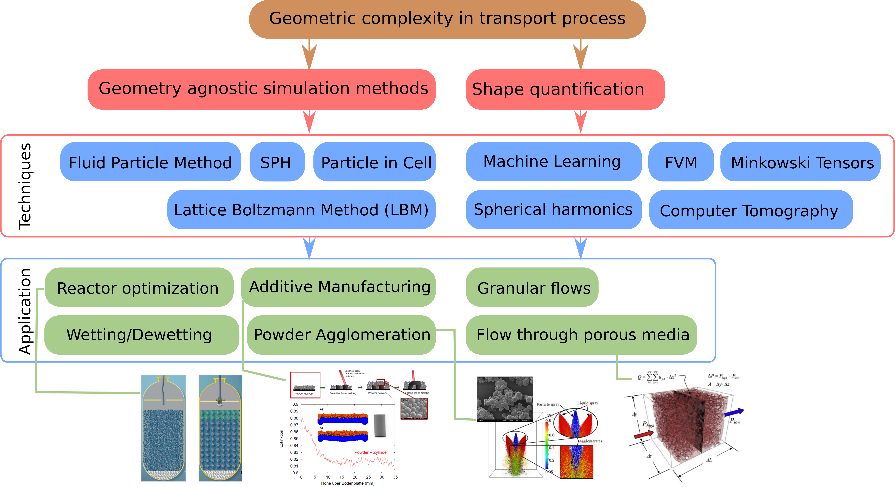
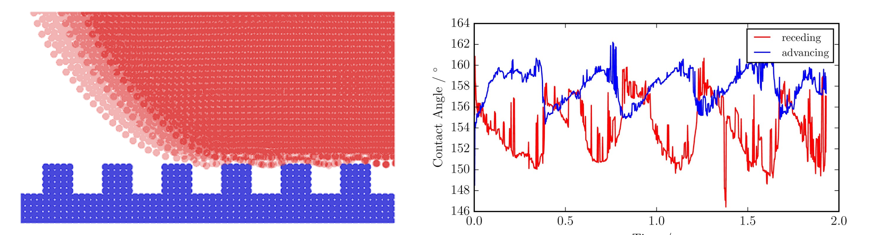

Research, teaching and collaboration plan for Dept. of Applied Mechanics, IITD.
Prapanch Nair
Numerical Methods for Plasma Physics,
Max Planck Institute for Plasma Physics, Garching, Germany.

Objectives
- Continue development of the particle based multiphysics solver
- Apply the particle based solvers to complex flow problems
- Solution of suspensions and granular flow
- Explore ML applications in geometrically nonlinear problems
- Develop new multiphase flow solvers
Research project examples
- Wetting of micropillar carpets with high aspect ratio:

- Control of bubble coalescence through salt concentration
- Machine learning the permeability of porous media using FVM simulations
- Optimizing the powder beds in additive manufacturing
- Numerical Analysis of Smoothed Particle Hydrodynamics---improved boundary conditions
Research plan
- Experience with writing 5 full length research proposals ( 3 to German science foundation, 1 to UGC-DAAD and 1 to Bavarian Supercomputing Consortium).
- Experience with programming in Python, C++, Fortran, setting up HPC clusters and HPC experience
- On going collaborations (IISc, FAU Erlangen, University of Birmingham etc.)
Funds
- Ministry of New and Renewable Energy (MNRE)
- Indian Space Research Organisation (ISRO)
- Indo French Centre for the Promotion of Advanced Research (IFCPAR)
- Indo-US Science & Technology Forum
- Deutsche Forschungsgemeinschaft (DFG – German Research Foundation)
- GAIL (India) Ltd.
- Department of Atomic Energy
- Council of Scientific & Industrial Research (CSIR)
- Defence Research & Development Organisation (DRDO)
- Bhabha Atomic Research Centre (BARC)
- Centre for Development of Advanced Computing (CDAC)
- Aeronautics Research and Development Board (ARDB)
- Science and Engineering Research Board (SERB)
- Tata Institute of Fundamental Research
- University Grants Commission
Plan
- Find what data is compressible in Gene3d
- Check if memory footprint can be reduced by other means
- Implement compression tests to check accuracy
- Implement compression in a way that actually reduces the memory footprint
Gene3d memory footprint
$$ f(x,y,z,v_{||},\mu, n)$$$$\frac{\partial f_a}{\partial t }+\frac{q_a F_{M,a}}{T_a} \frac{v_{||}}{c}\frac{\partial \bar{A}_{||}}{\partial t} = R_a$$
Quasi-neutrality condition
$$ \sum_a \underbrace{q_a^2\int d^3 v\left(\frac{F_{M,a}}{T_a}\phi_1(\mathbf{x},t)-{\color{red}\langle \frac{F_{M,a}}{T_a}\bar{\phi}_1(\mathbf{x},t) \rangle} \right)}_{Fieldmatrix: (N_x\times N_y)^2}= \sum_a q_a \int d^3v{\color{red}\langle f_a \rangle} $$
Gyromatrix:$\color{red} (N_x\times N_y)^2$ $\color{red}[N_z, N_\mu, N_n]$
Both Gyro and Field matrices are sparse
Gene3d memory footprint
- Script to output memory sizes to find the memory heirarchy
- There were 5 items larger in memory than $f_a$ : derivative prefactors, diagnostic arrays, and dense versions of matrices
- These were distributed in memory / removed with help of the PIs.
- Blocking of $f_a$ was used, which I found to be doing nothing to improve the performance of the code. This was removed as well.
Dense Sparse Matrices
- Petsc does not have a method to sum individual sparse matrices (not gather)
- Sparsity of the summed matrices were not being predetermined
- Temporary dense matrices were used to first sum (field matrices) and then convert to sparse matrices!
call MatGetValues(this%a,nRows_to_get,rows_to_get(1:nRows_to_get),this%NCols,cols,vals,ierr)
call petsc_check(ierr)
call mpi_allreduce(vals,vals_r,this%NCols*nRows_to_get,MPIU_SCALAR,MPIU_SUM,comm,istat)
if (abs(vals_r(linear_index)).gt.epsilon(vals_r(linear_index))) then
nnz = nnz + 1
nnz_cols(nnz)=icol-1
row_vals(nnz)=vals_r(linear_index)
end if
Sparse Matrices
Solution:
allocate( vals(this%NCols*maxRowsPerBlock) )
allocate( vals_r(this%NCols*maxRowsPerBlock) )
allocate( vals(this%NCols) )
allocate( vals_r(this%NCols) )
As a result of these changes and recommendations, we could achieve at least 100% reduction in maximum memory required per node. Caveat: The MPI communicator used is not optimal for these matrix summations.
Lossy compression: ZFP

Lossy compression: ZFP
Initial implementation:compress-decompress $f_a$ once every time step

Heat flux during the non-linear regime of a simulation
Lossy compression: ZFP
Current issues:- Compression of $f_a$ at every R-K step's array
- Raising bugs in unexpected areas
- Variation in sparsity of field matrix!
- Issues related to MPI communicator!